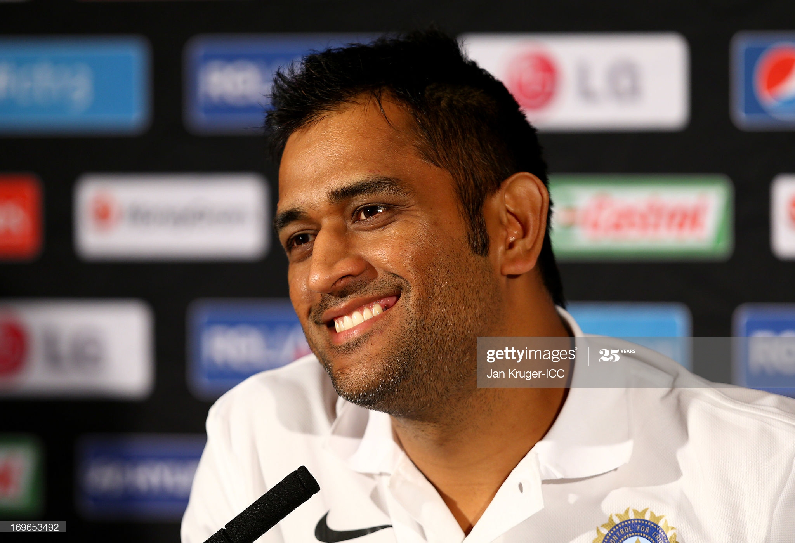

Mahendra Singh Dhoni

Wikipedia says:
Mahendra Singh Dhoni (born on 7 July 1981), is a former Indian international cricketer who captained the Indian national team in limited-overs formats from 2007 to 2016 and in Test cricket from 2008 to 2014. Under his captaincy, India won the inaugural 2007 ICC World Twenty20, the 2010 and 2016 Asia Cups, the 2011 ICC Cricket World Cup and the 2013 ICC Champions Trophy. A right-handed explosive middle-order batsman and wicket-keeper, Dhoni is one of the highest run scorers in One Day Internationals (ODIs) with more than 10,000 runs scored and is considered an effective "finisher" in limited-overs formats.He is widely regarded as one of the best wicket-keeper batsman and captain in the history of the game.He was also the first wicket-keeper to effect 100 stumpings in ODI cricket.
Dhoni made his ODI debut on 23 December, 2004 against Bangladesh, and played his first Test a year later against Sri Lanka. He has been the recipient of many awards, including the ICC ODI Player of the Year award in 2008 and 2009 the Rajiv Gandhi Khel Ratna award in 2007, the Padma Shri, India's fourth highest civilian honour, in 2009 and the Padma Bhushan, India's third highest civilian honour, in 2018.Dhoni was named as the captain of the ICC World Test XI in 2009, 2010 and 2013. He has also been selected a record 8 times in ICC World ODI XI teams, 5 times as captain. He is also called as T H A L A by his fans.